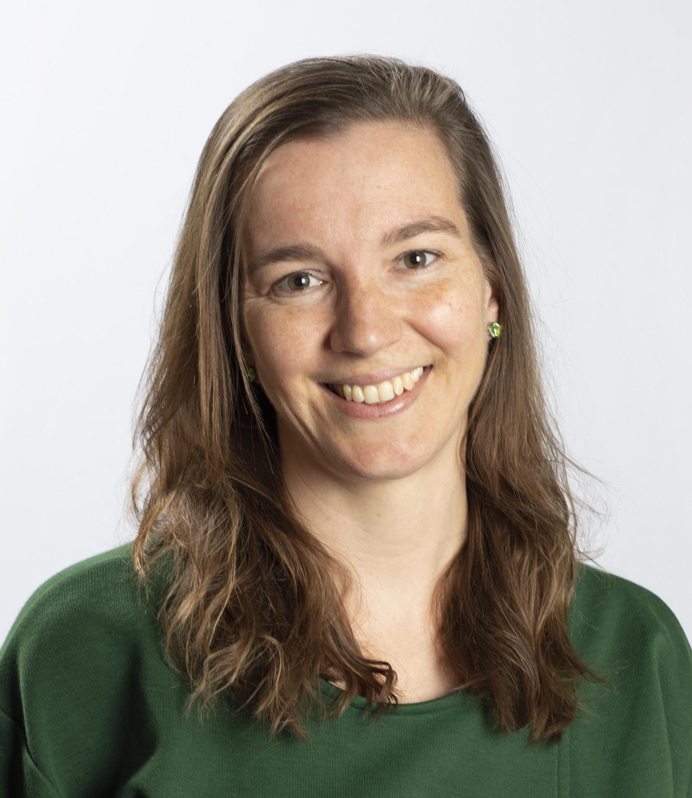
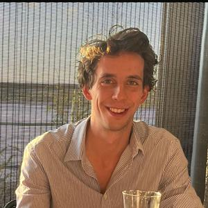

Janna Vrijsen
Co-lead REMAC
Associate Professor, RUMC/Donders
Cognitive bias and depression
janna.vrijsen@radboudumc.nl
Co-lead REMAC
Associate Professor, RUMC/Donders
Cognitive bias and depression
janna.vrijsen@radboudumc.nl


Loes Pouwels
Assistant Professor, BSI
Adolescents, social relations and social media
loes.pouwels@ru.nl
Assistant Professor, BSI
Adolescents, social relations and social media
loes.pouwels@ru.nl
Merlijn Olthof
Assistant Professor, RU/BSI
Psychopathology and dynamical systems
merlijn.olthof@ru.nl
Assistant Professor, RU/BSI
Psychopathology and dynamical systems
merlijn.olthof@ru.nl


Anna Tyborowska
Assistant Professor, Donders/RUMC
Vulnerability and resilience
anna.tyborowska@ru.nl
Assistant Professor, Donders/RUMC
Vulnerability and resilience
anna.tyborowska@ru.nl


Hanneke den Ouden
Associate Professor, Donders
Learning and decision-making
hanneke.denouden@donders.ru.nl
Associate Professor, Donders
Learning and decision-making
hanneke.denouden@donders.ru.nl
